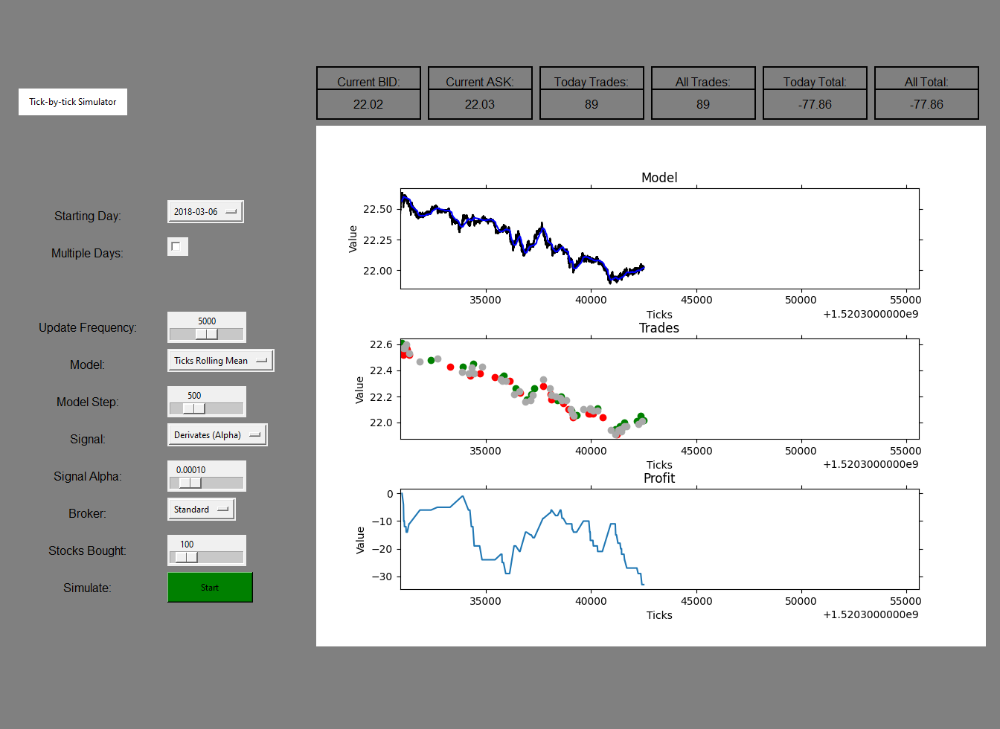

Nessa pagina foram selecionados algumas das minhas principais experiencias profissionais, para representar minhas competencias, responsabilidades, areas de conhecimento e especialidades
Quant Researcher e Trader na Vector com foco em desenvolvimento e monitoramento de estrategias de alta frequecia na CME, EUREX e B3
Associado na Pandhora Investimentos com foco em modelagem de mercado, alocação de portfolio, monitoramento de risco e desenvolvimento de software

Análise do comportamento de ações e criação de algoritimos de investimento utilizando de dados de alta frequência (tick-by-tick)

Análise de projetos de implementação de Cloud para o governo federal

Criação e condução de workshop com alunos do ensino médio para aproxima-los de conceitos de programação e tecnologia